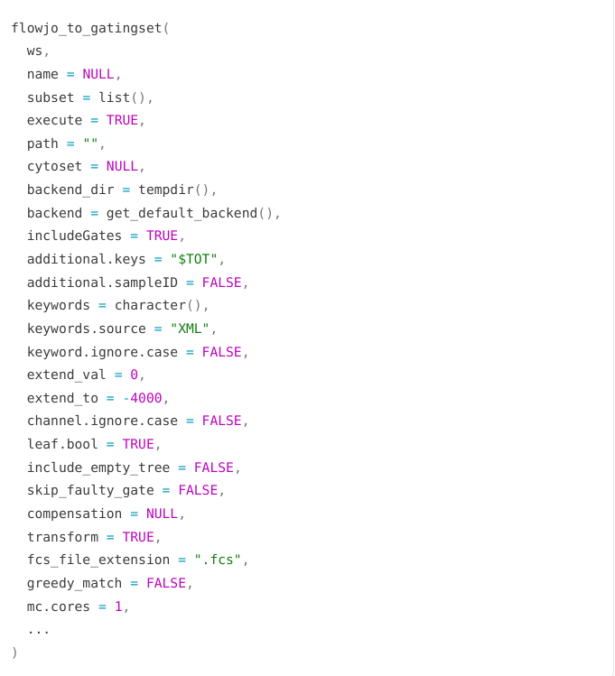
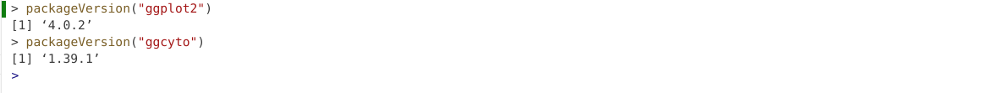
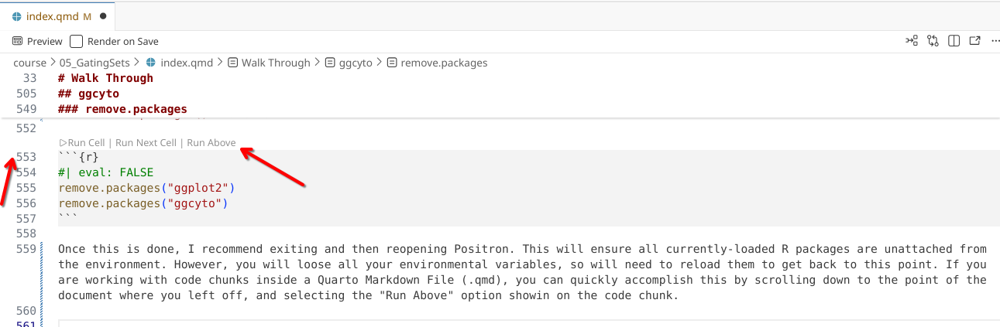

Welcome to the fifth week of the Cytometry in R course!!! At this point, we are through a significant portion of the “Intro to R” material, and will start encountering more “Cytometry-focused” material moving forward.
If we think of a typical flow cytometry experiment, there is more to the analysis than simply acquiring the .fcs file. While there is substantial information present within an .fcs file, in the context of analyzing them with commercial software, we rely on additional infrastructural elements to organize the various files, transform (scale), compensate (for conventional flow), visualize, derrive statistics, etc.
This infrastructural requirement within the R context is primarily handled by the flowCore and flowWorkspace R packages from Bioconductor. Today, we will build on what we learned during Week 03 but in the context of working and interacting with multiple .fcs files. This will provide a solid foundation to explore in greater depth how individual components of our typical workflow are represented within the R context.
Walk Through
Housekeeping
As we do every week, on GitHub, sync your forked version of the CytometryInR course to bring in the most recent updates. Then within Positron, pull in those changes to your local computer.
After setting up a “Week05” project folder, copy over the contents of “course/05_GatingSets/data” to that folder. This will hopefully prevent merge issues next week when attempting to pull in new course material. Once you have your new project folder organized, remember to commit and push your changes to GitHub to maintain remote version control.
If you encounter issues syncing due to the Take-Home Problem merge conflict, see this walkthrough. The updated homework submission protocol can be found here
flowFrame
Let’s start off by recalling the approach we first saw during Week 03, where using the flowCore package we loaded the contents of our .fcs file into R as a “flowFrame” object.
To do this, we first identified the .fcs files we were interested using file.path() to specify the folder, and list.files() to find contents containing “.fcs”.
# Folder <- file.path("course", "05_GatingSets", "data") # For Testing Folder <-file.path("data") # For Quarto Renderingfcs_files <-list.files(Folder, pattern=".fcs", full.names=TRUE)fcs_files
We then identified an individual .fcs file of interest using the [] method of indexing.
fcs_files[1]
[1] "data/2025_07_26_AB_02_INF052_00_Ctrl.fcs"
Then, after making sure flowCore was attached to our local environment (via the library() function), we could use read.FCS() to read in our .fcs files contents to R.
flowFrame object '2025_07_26_AB_02_INF052_00_Ctrl.fcs'
with 10000 cells and 43 observables:
name desc range minRange maxRange
$P1 Time NA 896745 0 878.809
$P2 SSC-W NA 4194304 0 4194303.000
$P3 SSC-H NA 4194304 0 4194303.000
$P4 SSC-A NA 4194304 0 4194303.000
$P5 FSC-W NA 4194304 0 4194303.000
... ... ... ... ... ...
$P39 APC-R700-A CD107a 4194304 -111 4192506
$P40 Zombie NIR-A Viability 4194304 -111 4192506
$P41 APC-Fire 750-A CD27 4194304 -111 4192506
$P42 APC-Fire 810-A CCR7 4194304 -111 4192506
$P43 AF-A NA 4194304 -111 4194303
472 keywords are stored in the 'description' slot
As we start to think about the wider infrastructural handling of our .fcs files, what would have occurred if we had provided multiple .fcs file paths to read.FCS()? Let’s go ahead and check by not providing an index number.
Error in `read.FCS()`:
! 'filename' must be character scalar
As you can tell, this error message is not particularly interpretable. It however arises from type of object we are passing to the function, whereby an individual file.path (fcs_files[1]) appears as class “character” with a single value (ie. a scalar), but the combined vector (fcs_files) contains multiple values.
Consequently, we will need to use another function if we want to read in multiple .fcs files at once. For flowCore, this function is the read.flowSet() function.
A flowSet with 6 experiments.
column names(43): Time SSC-W ... APC-Fire 810-A AF-A
Alternatively, we can designate specific files within “fcs_files” we want to read in using the [] and c() notation style we have encountered previously.
A flowSet with 3 experiments.
column names(43): Time SSC-W ... APC-Fire 810-A AF-A
On follow-up, we can see that read.flowSet() has created a “flowSet” class object.
class(flowSet)
[1] "flowSet"
attr(,"package")
[1] "flowCore"
Which we can also confirm by glancing at the right secondary sidebar to see the created Variables within our environment. Applying our investigatory skills from Week 3, we surmise that “flowSet” is another Bioconductor style S4-type object that within its frame slot contains individual “flowFrames”.
If instead of class() we had used str(), we would have seen a similar output ton what we see in the Variables panel.
str(flowSet)
Formal class 'flowSet' [package "flowCore"] with 2 slots
..@ frames :<environment: 0x55d40ab8dbe8>
..@ phenoData:Formal class 'AnnotatedDataFrame' [package "Biobase"] with 4 slots
.. .. ..@ varMetadata :'data.frame': 1 obs. of 1 variable:
.. .. .. ..$ labelDescription: chr "Name"
.. .. ..@ data :'data.frame': 6 obs. of 1 variable:
.. .. .. ..$ name: 'AsIs' chr [1:6] "2025_07_26_AB_02_INF052_00_Ctrl.fcs" "2025_07_26_AB_02_INF052_00_SEB.fcs" "2025_07_26_AB_02_INF100_00_Ctrl.fcs" "2025_07_26_AB_02_INF100_00_SEB.fcs" ...
.. .. ..@ dimLabels : chr [1:2] "rowNames" "columnNames"
.. .. ..@ .__classVersion__:Formal class 'Versions' [package "Biobase"] with 1 slot
.. .. .. .. ..@ .Data:List of 1
.. .. .. .. .. ..$ : int [1:3] 1 1 0
.. .. .. .. ..$ names: chr "AnnotatedDataFrame"
Reminder
While not today’s focus, remember we could access individual components inside the flowSet using the @ accessors covered during Week 3
Memory Usage
Both “flowFrame” and “flowSet” objects were implemented in the flowCore package, which is the oldest extant flow cytometry R package on Bioconductor. Consequently, a large proportion of the other flow cytometry R packages read in .fcs files as “flowFrame” and “flowSet” objects.
One consideration of this method is the contents of your .fcs files are read into your computer’s random access memory (RAM). While for individual .fcs files or small experiments this present a problem for most modern computers, when working with large spectral flow cytometry files containing millions of events (or trying to analyze many .fcs files at once), you may encounter situations where you can quickly exceed your computers available RAM.
To build some contextual understanding of the problem, let’s learn how to check how much memory is being used by our individual variables/objects within our R session. We will primarily use the lobstr R packages obj_size() function, as it better handles evaluating complicated objects than base R’s object.size() function.
We can check and see the memory usage by our flowFrame object
And contrast to the greater ammount of space occupied by our flowSet object (which contains multiple flowFrames)
obj_size(flowSet)
20.99 MB
If we were curious how much memory total we are using within R at the current moment, we can check using the mem_used() function:
mem_used()
146.98 MB
Ultimately, how many .fcs files you are able to read in and interact with before running out of available RAM memory space will be dictated by your individual computers hardware configuration. You can check programmatically how much RAM you have available, although the specific function you will need to use will depend on your computer’s operating system.
To simplify the process, here is an additional example of where a conditional can prove useful, allowing us to check in an operating system specific manner. It takes the output of the Sys.info() function, namely the “sysname” argument and then retrieves the relavent function.
When evaluating the returned outputs, primarily consider the total, used and free outputs.
cytoframe
In addition to the flowCore R package, additional flow cytometry infrastructure support is provided by the flowWorkspace package. Instead of the reading all the .fcs files contents into active RAM, flowWorkspace reduces the memory overhead by using “pointers” to interact with the object in it’s current storage location (either on your harddrive, SSD, etc.), only reading in components to RAM as needed.
As part of improvements to flowWorkspace, some behavior of
GatingSet objects has changed. For details, please read the section
titled "The cytoframe and cytoset classes" in the package vignette:
vignette("flowWorkspace-Introduction", "flowWorkspace")
Because of these differences in how data is interracted with, we end up with parallel equivalents to the traditional flowFrame and flowSet type objects. These include “cytoframe” for single .fcs files
Unlike “flowFrame” and “flowSet”, when we run str(), for “cytoframe” and “cytoset” objects we don’t get back quite as much information.
str(cytoframe)
Formal class 'cytoframe' [package "flowWorkspace"] with 5 slots
..@ pointer :<externalptr>
..@ use.exprs : logi TRUE
..@ exprs : num[0 , 0 ]
..@ parameters :Formal class 'AnnotatedDataFrame' [package "Biobase"] with 4 slots
.. .. ..@ varMetadata :'data.frame': 5 obs. of 1 variable:
.. .. .. ..$ labelDescription: chr [1:5] "Name of Parameter" "Description of Parameter" "Range of Parameter" "Minimum Parameter Value after Transformation" ...
.. .. ..@ data :'data.frame': 0 obs. of 5 variables:
.. .. .. ..$ name : chr(0)
.. .. .. ..$ description: chr(0)
.. .. .. ..$ range : num(0)
.. .. .. ..$ minRange : num(0)
.. .. .. ..$ maxRange : num(0)
.. .. ..@ dimLabels : chr [1:2] "rowNames" "columnNames"
.. .. ..@ .__classVersion__:Formal class 'Versions' [package "Biobase"] with 1 slot
.. .. .. .. ..@ .Data:List of 1
.. .. .. .. .. ..$ : int [1:3] 1 1 0
.. .. .. .. ..$ names: chr "AnnotatedDataFrame"
..@ description:List of 1
.. ..$ note: chr "empty"
str(cytoset)
Formal class 'cytoset' [package "flowWorkspace"] with 3 slots
..@ pointer :<externalptr>
..@ frames :<environment: 0x55d414e7fdf0>
..@ phenoData:Formal class 'AnnotatedDataFrame' [package "Biobase"] with 4 slots
.. .. ..@ varMetadata :'data.frame': 0 obs. of 1 variable:
.. .. .. ..$ labelDescription: chr(0)
.. .. ..@ data :'data.frame': 0 obs. of 0 variables
.. .. ..@ dimLabels : chr [1:2] "rowNames" "columnNames"
.. .. ..@ .__classVersion__:Formal class 'Versions' [package "Biobase"] with 1 slot
.. .. .. .. ..@ .Data:List of 1
.. .. .. .. .. ..$ : int [1:3] 1 1 0
.. .. .. .. ..$ names: chr "AnnotatedDataFrame"
This is similarly the case when glancing at the right secondary side bar, as the respective objects under variables appear to have empty matrices where normally we would have seen the MFI values.
Due to flowWorkspace use of pointers, the missing data remains stored on the drive, only being retrieved right before it is required. This reduces the overall RAM utilization. Let’s double check the differences in memory utilization for flowFrame/cytoframe:
obj_size(flowFrame)
3.53 MB
obj_size(cytoframe)
5.40 kB
And similarly the case for flowSet and cytoset:
obj_size(flowSet)
20.99 MB
obj_size(cytoset)
3.88 kB
Additionally, with computer hardware increasingly switching from spinning disk hard-drives to faster solid state drives, the performance penalty previously experienced when not running from RAM is not as large of a concern as in previous years.
Interconverting
Despite both R packages having been around for a while, many Bioconductor and GitHub often only implement methods to handle either flowFrames or cytoframes (although newer R packages are now allowing for both). Consequently, as we move forward in the course, it helps to be aware of which ones we are working with, and have the ability to interconvert between them as needed.
To go from a flowFrame to a cytoframe, we can use the flowFrame_to_cytoframe() function
A flowSet with 6 experiments.
column names(43): Time SSC-W ... APC-Fire 810-A AF-A
obj_size(ConvertedToFlowset)
20.99 MB
Gating Sets
Fortunately, regardless of whether we are using flowFrame/flowSet (RAM) and cytoframe/cytoset (memory pointers), both routes end up converging at the next step, where the underlying .fcs files are passed off to the GatingSet() function.
As we prefaced in the background, beyond the .fcs files themselves, we need infrastructural elements with which to interact with the underlying data, which allows us to organize the various files, transform (scale), compensate (for conventional flow), visualize, derrive statistics, etc. A GatingSet serves as the infrastructural framework that allows us to do this in R.
If we investigate our current GatingSet objects, we won’t see much
This will change as we start layering on additional elements. However, rather than try to cram everything into a single week, we will explore in greater depth the individual components over the next three weeks. Instead, for the rest of today, we will work backward, by exploring a GatingSet objecct and what it is capable of doing once fully assembled.
CytoML
The CytoML R package (also maintained by Mike Jiang) is a sister package to the flowWorkspace. It’s main purpose is to permit bringing in existing FlowJo, Diva and Cytobank Workspaces, with all their gates, transformations, etc. into R as fully assembled GatingSet objects. For those who already use one of these commercial softwares, it can be quite useful tool.
Since our goal is to examine a fully assembled GatingSet object, we will be using it today to bring in a FlowJo workspace to R. However, since this is a free Cytometry in R course, and not about to have everyone pay for a license for a one-off topic, in the pre-course Floreada walkthrough I documented how to convert a free Floreada.io workspae into a FlowJo.wsp that can also be used (please note that as of early 2026, some scaling bugs may be present and require troubleshooting).
To get started, let’s first attach CytoML to our local environment via the library() call.
The .wsp files within this week’s data where created via Floreada.io. The main difference between the two files is one is a copy of the original that was opened within FlowJo, and subsequently swtiched from logicle to bi-exponential transformation.
We will need to provide the appropiate file path for our desired .wsp file. We can start by identifying which are present using list.files()
Folder # Defined Above
[1] "data"
FlowJoWsp <-list.files(path = Folder, pattern =".wsp", full =TRUE)FlowJoWsp
Having set up the intermediate flowjo_workspace object, we can attempt to read in the actual data from the .wsp into a GatingSet using the flowjo_to_gatingset() function.
However, due to how I named the original .fcs files (“GROUPNAME” being individual specimens, “TUBENAME” being either Ctrl or SEB), and downsampled to the same number of cells, we will encounter the following error
Error:
! Multiple FCS files match sample 00_Ctrl.fcs by filename, event count, and keywords.
Candidates are:
/home/david/Documents/CytometryInR/course/05_GatingSets/data/2025_07_26_AB_02_INF052_00_Ctrl.fcs
/home/david/Documents/CytometryInR/course/05_GatingSets/data/2025_07_26_AB_02_INF100_00_Ctrl.fcs
/home/david/Documents/CytometryInR/course/05_GatingSets/data/2025_07_26_AB_02_INF179_00_Ctrl.fcs
Please move incorrect files out of this directory or its subdirectories.
gs
Error:
! object 'gs' not found
As with any error, my first move is to check the help documentation. In this case, my initial response is to see if I can identify an argument that will help differentiate between the names for each specimen.
?flowjo_to_gatingset

In this case, I find that the “additional.keys” argument would likely work for this troubleshooting
Especially when working with CytoML, it is often good to have an idea of how long it will take a particular function to run (to better plan how to use our time while waiting, whether to go grab coffee, etc.). There are a couple ways to do so.
One, using the system.time() function from base R, in which we surround whatever line of code we wish to evaluate in {}
Alternatively, if we install the bench package, we can use the mark function to evaluate how long it takes on average across numerous iterations.
# install.packages("bench") # CRANlibrary(bench)
mark( Test <-flowjo_to_gatingset(ws=ws, name=1, path = Folder, additional.keys="GROUPNAME"),iterations=5 )
# A tibble: 1 × 6
expression min median `itr/sec` mem_alloc `gc/sec`
<bch:expr> <bch> <bch:> <dbl> <bch:byt> <dbl>
1 Test <- flowjo_to_gatingset(ws = ws… 505ms 527ms 1.92 13.3KB 0
Gates
Now that we have loaded the contents of the FlowJo/Floreada workspace, we can start exploring the various infrastructural capabilities of a GatingSet object.
Let’s start by evaluating whether the manually-drawn gates I drew survived the journey. To do this, I can generate a visual gating treee using the plot() function.
plot(gs)
We can also retrieve the individual gates and their gaing paths using the gs_get_pop_paths() function.
Since GatingSets contain multiple .fcs files, we may want to be able to subset them based on metadata for a particular variable. We can check to see current metadata using the pData() function.
It currently doesn’t have much, but we will explore how to change this more over the next few weeks. For now, just know that we could add additional metadata via either a .csv file, or by retrieving additional description keywords from within the .fcs files themselves (as shown below)
As you can surmise, a lot of the infrastructural style handling done by commercial softwares is being orchestrated/mediated through our GatingSet object. Since it’s able to create and retain gating information, how would we go about visualizing the underlying data contained within each?
Within R, most plots are generated using the ggplot2 package from the tidyverse (which we will explore next week), which builds of the “Grammar of Graphics” concept, combining layers together to create the final plots. The Bioconductor ggcyto R package extends this concept to enable flow cytometry data contained within a GatingSet to be plotted.
Important
As is the case with most free open-source software (FOSS), R packages will change over time as their developers add new features, make improvements, or alter internal functions to speed things up.
Important
ggplot2 recently had a major version change, with significant internal changes occuring. As a consequence of these changes, ggcyto functions that relied on the old ggplot2 functions broke and had to be updated.
Important
Any updates to CRAN packages are reflected immediately. By contrast, Bioconductor is on a twice yearly release cycle, so to take advantage of the ggcyto “fixes” that allow it to interact with the new version of ggplot2, we will need to make sure we have the “developmental” version installed.
packageVersion
Let’s start off by checking what version of both the ggplot2 and ggcyto packages you currently have installed on your computer.
packageVersion("ggplot2")
[1] '4.0.2'
packageVersion("ggcyto")
[1] '1.39.1'
If you were able to retrieve the following package versions (or greater”) for ggplot2 and ggcyto, you should be all set and can skip the subsequent reinstallation steps.

If you however found you have the older package versions (ex. ggplot2 3.5.2 or ggcyto 1.37.1) currently installed, you will likely encounter errors when trying to run the functions to plot your data below (since the changes are not fully backward-compatible with older versions).
remove.packages
Since ggcyto has a hard-coded dependency on ggplot2, if you have the older versions, I would recommend uninstaling both first, using the remove.packages() function.
Once this is done, I recommend exiting and then reopening Positron. This will ensure all currently-loaded R packages are unattached from the environment. However, you will loose all your environmental variables, so will need to reload them to get back to this point. If you are working with code chunks inside a Quarto Markdown File (.qmd), you can quickly accomplish this by scrolling down to the point of the document where you left off, and selecting the “Run Above” option showin on the code chunk.

Installing correct versions
To reinstall ggplot2, you just need to install again from CRAN (as with it’s rolling-release model any changes the developers make become immediately available to everyone)
install.packages("ggplot2")
If you need to reinstall ggcyto, because of Bioconductor’s twice yearly release cycle, you will need to install the “developmental” version to take advantage of the fixes. Since this is for a one-off package, the easiest installation approach if to go via the GitHub using the remotes package’s install_github()
remotes::install_github("RGLab/ggcyto")
Plotting
Once you have the current versions of both ggplot2 and ggcyto, we can proceed to attach them to your local environment via the library() function.
library(ggplot2)library(ggcyto)
Loading required package: ncdfFlow
Loading required package: BH
As was mentioned, ggcyto follows the ggplot2 grammar of graphics syntax, which we will learn more extensively next week. For now, lets look at a simple example
The function responsible for plotting is the ggcyto() function. The first argument (“gs[1]”) is designating which .fcs file in our GatingSet we are trying to visualize.
The second argument (“subset”) corresponds to which gating node we want to visualize. In this case, when set to “root”, we are seeing all cells present in the .fcs file. If we however wanted to visualize the cells within the CD4+ gate, we would swap the value provided to this argument.
The next argument “aes” stands for aesthetics (more on this next week). You will notice it has its own set of parenthesis, in which we designate the markers/fluorophores we want to visualize on the x and y axis.
The final argument (“+ geom_hex(bins=100)”) specifies we want to generate a flow cytometry style plot, with it’s bin arguments value setting the resolution.
Now that we have walked through the arguments, let’s visualize the data
This is all we will cover for ggcyto for now, we will circle back over the next couple weeks as we gain more familiarity with how to build our own GatingSet objects. If you want to jump ahead, please see the additional resources section and happy exploring!
Take Away
Today, we looked at the two main representations of flow cytometry data in R, the older flowCore implemented flowFrame/flowSet objects that are stored in RAM, and the flowWorkspace cytoFrame/cytoSet objects that operate through memory pointers. We started our learning journey to understand GatingSet objects, and how to use them to mediate/orchestrate in R many of the infrastructural steps that would normally be performed by commercial software. And finally, we briefly covered how to use the ggcyto to visualize data contained within our GatingSets.
Similar to our utilization of tidyverse functions last week, we will be using GatingSets continously throughout the rest of the course. Over the next few weeks we will instead of retrieving already assembled GatingSets via CytoML assemble them from scratch within R.
Next week, we will dive further into the ggplot2 package from the tidyverse and how it implements the “Grammar of Graphics” concept. In the process, we will see how by combining layers and changing various elements being added on to the base layers of the plot, we can end up with many different plots we normally encounter as cytometrist.
Additional Resources
flowWorkspace Bioconductor Vignette The Bioconductor vignettes are always a good place to start with any of the Cytoverse packages, the vignette for flowWorkspace is no exception. If you want to understand more about how to subset cytosets, or the various functions and arguments in a GatingSet, this should be your first stop.
CytoML Bioconductor Vignette If you use FlowJo, Diva, or CytoBank routinely, and want to understand more about how to bring in your own experiments to R, the CytoML vignettes should be your next stop.
ggcyto Bioconductor Vignette. There are several vignettes that can be found on the ggcyto Bioconductor website on how to plot your flow cytometry data, this one surmize many of the points we will be covering over the next few weeks.
Using what you learned last week in Introduction to Tidyverse, for the imported GatingSet, retrieve the data.frame from cell counts per gate and attempt to mutate a new column showing percent of the parent gate. Remember, this is intentionally tricky at this point, we will go over how to efficiently do this in a few weeks
Problem 2
As we saw, CytoML can be finicky when names are repeated, or .fcs files are not present. Try removing a couple of the .fcs files from the data folder, and re-run the code. Document what kind of errors result.
Problem 3
For ggcyto, attempt to generate plots to visualize TNFa and IFNg for the various cell populations, across both Ctrl and SEB samples. In the process, change the bins argument until you end up with a resolution that you would be happy with for your own plots, and write it down.